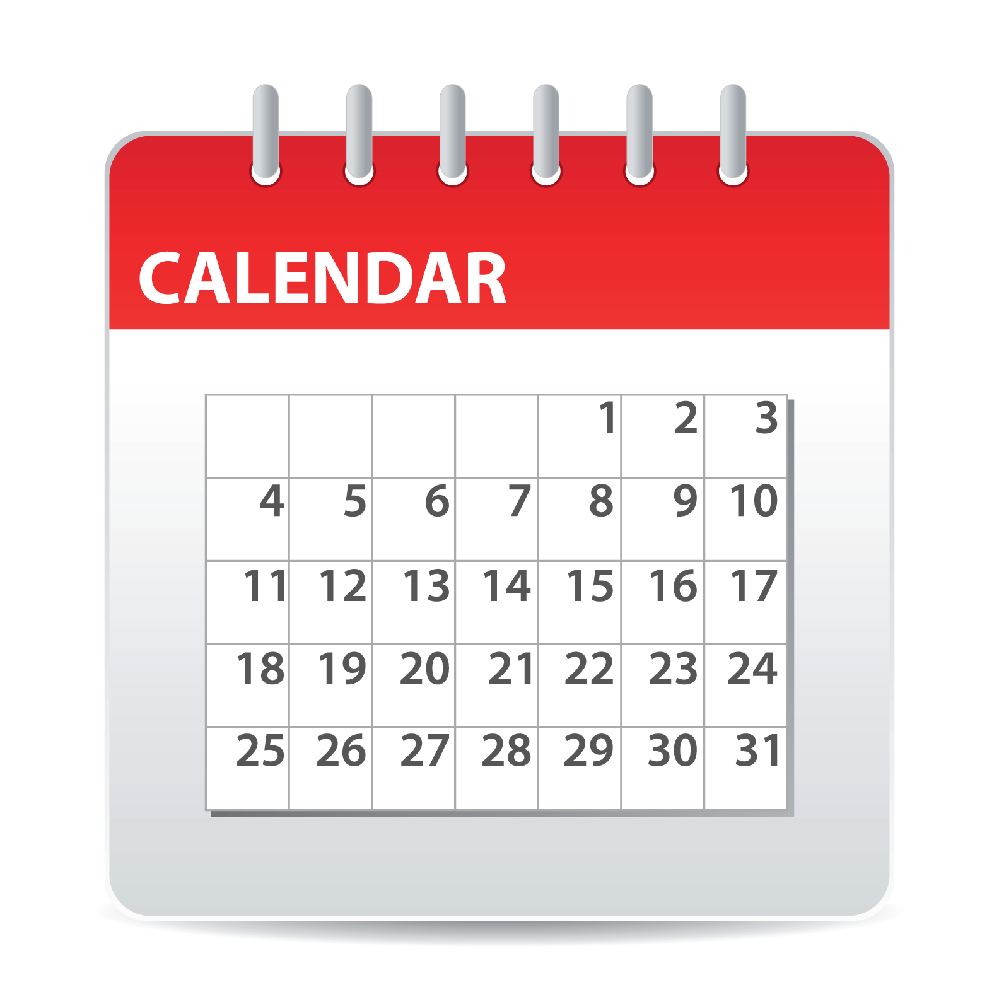
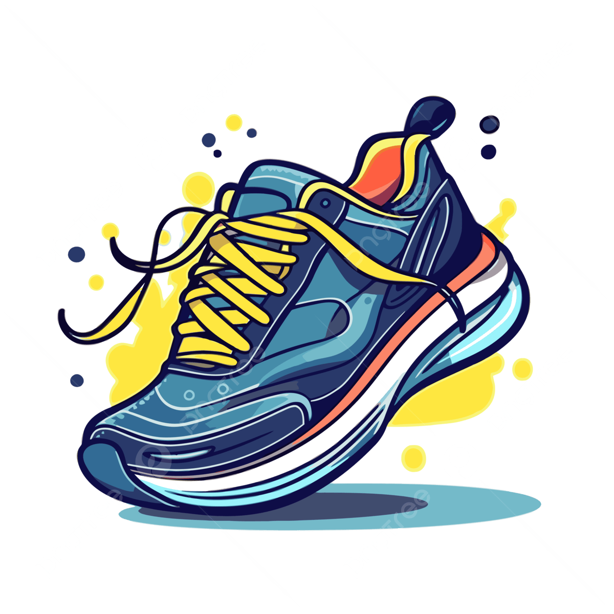
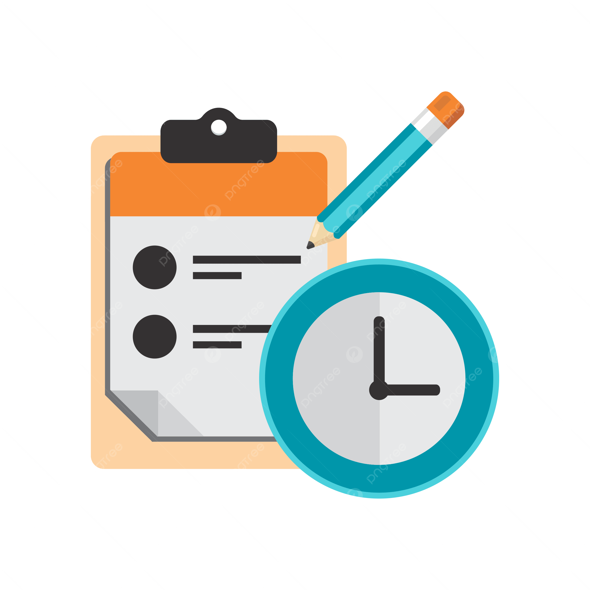

This all-in-one platform empowers students and faculty to manage their academic, professional, and extracurricular activities from a single dashboard. By combining scheduling, course management, campus engagement, and task organization, the tool provides a seamless and efficient way to stay informed, connected, and productive throughout the academic year.

Calendar
Stay organized with an integrated calendar that helps students and faculty keep track of important dates, events, and schedules. Users can view class timetables, assignment deadlines, exams, meetings, and campus events in one centralized location. The calendar supports reminders, notifications, and scheduling tools to ensure users never miss an important commitment.
Classes
Manage academic courses with ease through the Classes section. Students can access course information, view syllabi, track assignments, monitor grades, and stay updated on announcements from instructors. Faculty can organize course materials, communicate with students, post assignments, and manage important academic resources, creating a streamlined learning experience for everyone.

Extracurriculars
Explore and participate in campus life beyond the classroom. The Extracurriculars section allows users to discover student organizations, clubs, workshops, volunteer opportunities, and university events. Students can track their involvement, register for activities, receive event updates, and build a more engaging and connected campus experience.

To-DO
Boost productivity with a personalized task management system designed to help users stay on top of their responsibilities. Create and organize tasks, set priorities, establish deadlines, and track progress for assignments, projects, meetings, and personal goals. Smart reminders and progress tracking help ensure that important tasks are completed on time and efficiently.